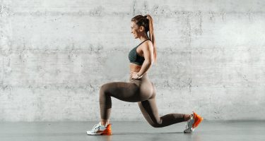
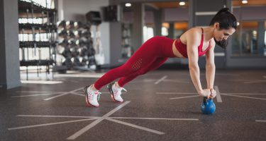
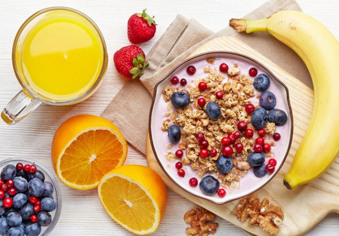
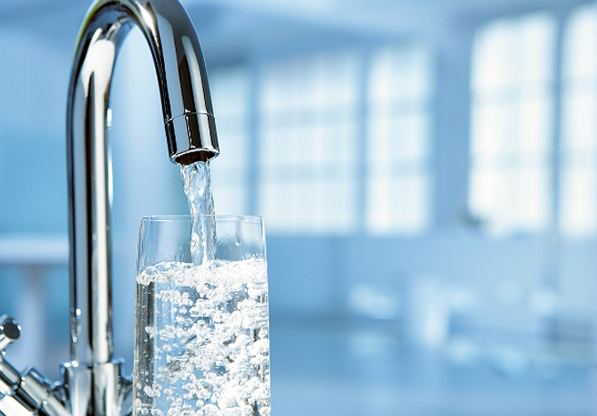

Чтобы был плоский живот, тонкая талия и красивые ягодицы,
нужно приучить себя к регулярным тренировкам. И …
Кардио в домашних условиях
Кардио советуют делать всем — и начинающим спортсменам, и профессионалам.
А всё потому, что …

Упражнения для бедер
Всё, что нужно для похудения бедер, — это сбалансированное питание,
упорство и регулярные тренировки. В этой …

Тренировка для ног
Если ваша цель — стройные и подтянутые ноги, то одних приседаний и выпадов будет маловато. Нужно …
5 упражнений для спины
Самое вредное для позвоночника — сидеть. Особенно сидеть, наклонившись вперед. А теперь подумайте, что обычный …
Рельефный пресс
Готовы выложиться на все сто? Superfit.me приготовил для вас мощную тренировку для мышц пресса.
Перед основной …

ПРАВИЛЬНАЯ ДИЕТА ДЛЯ ПОХУДЕНИЯ
Диета правильного питания, по сути, призвана обеспечивать организм всеми необходимыми питательными веществами и микроэлементами и базируется на принципах правильного питания.

ПРАВИЛЬНЫЙ ПИТЬЕВОЙ РЕЖИМ
Чтобы похудеть, нужно меньше есть. К этому общеизвестному факту диетологи любят добавлять – и больше пить. Без достаточного потребления жидкости снижение веса идет очень медленно.